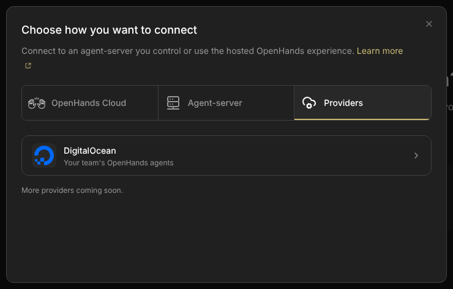
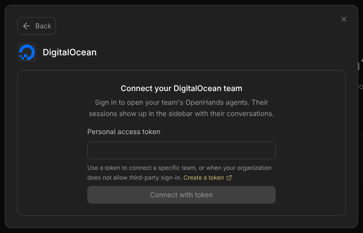
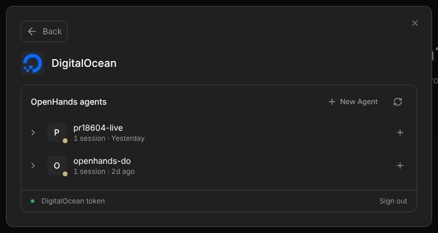

Choose DigitalOcean, sign in, and open your session. On an iPad, sign in to approve that browser too. A normal restart keeps your place. Agents use the existing Canvas session key for now; people should not copy that key to finish a DO login.
Merged from two proposals · smolpaws and Claude CodeToday’s behavior checked live · revision 8d39305Proposal · nothing implemented
In short · decided 20 October
You sign in with DigitalOcean, and a normal restart keeps you signed in.
Canvas keeps that sign-in in the Keychain (or the Windows or Linux equivalent) on the machine that runs Canvas.
The desktop app and the browser work the same way, through one bridge.
After a restart, Canvas reopens the DigitalOcean session you had open. If something is missing, it says what, and keeps your selection.
Agents use the existing Canvas session key. Treat it as an admin key. No new key types or permission levels in this release.
New-browser sign-in must also approve access to this Canvas host. The owner check and a working return path are release checks, not assumed solved.
Assumption: the Mac’s Canvas is not on the internet, and this plan doesn’t put it there. Other devices reach it over the same Wi-Fi or a private network such as a tailnet. Canvas only makes outgoing connections to DigitalOcean, so DigitalOcean never needs to reach the Mac.
The user experience comes first. DigitalOcean should be the easiest backend to connect and restore. Keep ordinary backends’ own keys unchanged. For DO, make login the normal action. Keep saved sessions, accounts and conversations intact. Show one useful next step when a connection fails.
This page merges smolpaws’s Keep DigitalOcean connected and Claude Code’s People sign in, agents use keys, both written on 19 October, with Engel’s decisions from the next day. Their earlier versions are linked under Evidence.
Start here / User stories
Three short stories.
What a person and their agents should be able to do. People sign in; they don’t type keys. Agents use keys.
Story 1 · on the Mac
Set up once
Install Agent Canvas.
Onboarding creates the Local backend. The Mac’s own browser gets the Canvas key by itself.
Add Backend → DigitalOcean → Sign in with DigitalOcean. Approve on DigitalOcean.
New Agent makes an OpenHands agent on DigitalOcean. Open it and work.
Restart the Mac or Canvas: still signed in, back in the same session.
If your organization blocks third-party apps, paste a personal access token once instead of signing in.
Story 2 · on the iPad
Add a device
Open Canvas’s address on the iPad, over the same Wi-Fi or a tailnet. The iPad isn’t in yet.
On the Mac: Add another device. A QR code appears.
Scan it with the iPad. Done: the Local and DigitalOcean backends both work.
Later option: Sign in with DigitalOcean on the iPad instead (compare). That one opens only the DigitalOcean backends.
Needed first: Canvas has to accept devices on your network. Today only the npx launcher can (--host). The desktop app needs a setting for it (a follow-up).
Story 3 · agents
Let an agent use DigitalOcean
An agent in a conversation on your Local backend (the Agent Server Canvas runs on this computer or in Docker) already gets the Canvas key, as $OPENHANDS_AUTOMATION_API_KEY. With it and the Canvas address, it can list your DigitalOcean agents, open a session and start a conversation there. Nothing tells the agent, though, unless you do.
Your own agent on the Mac, Wi-Fi or tailnet: give it the Canvas key. It has full access, for now.
An agent in the cloud, or inside a DigitalOcean session, can’t reach the Mac. Give it its own DigitalOcean token instead.
For now this works with the npx launcher and Docker, started with MARS_WEB=1. The desktop app gets it when it joins the host bridge. The details are in section 07.
01 / A small dictionary
Eight words, one meaning each.
01Canvas host
The computer that runs Canvas: your Mac with the desktop app, or a Mac mini, Linux box or container running npx @openhands/agent-canvas.
02Bridge
Code on the Canvas host. It calls DigitalOcean and keeps the connection to your sessions open.
03Session key
The existing admin key accepted by the Canvas host’s protected routes, including its bridge. It is not a DO token or a guest Agent Server key. The local launcher can supply it automatically; other backends keep their own keys.
04DO session
A running sandbox on DigitalOcean with its own Agent Server. MARS is the integration’s internal name.
05Backend
A saved destination in Canvas. A DigitalOcean backend points at one DO session through the bridge.
06OAuth
You approve access on DigitalOcean’s own page, and DigitalOcean gives the host a token: a secret that grants limited permission.
07PKCE
A one-time proof for OAuth. The process that starts a sign-in must prove it is the one finishing it. No shared app secret is needed.
08Safe storage
The operating system’s protected secret store: Keychain on macOS, Credential Manager on Windows, Secret Service on Linux desktops.
Permission A · caller → Canvas host
May this caller use this bridge?
Current flow (21 October 2026, in the PR stack): Today that access comes from the host’s session key, supplied automatically, entered manually, or obtained through pairing. Afterward, the browser can use the bridge cookie. A key for a different backend does not grant access to this host. In the proposed people flow, a successful DO login by the approved owner also earns a browser cookie. Agents keep presenting the existing session key. The cookie is for /mars; it does not change other backends’ keys.
Permission B · the host
May this host use this DigitalOcean account?
DigitalOcean checks an OAuth token or a personal token. The bridge holds it in safe storage. An OAuth grant is not returned to the page or an agent, and is never forwarded to the Agent Server inside DO. Manual token entry remains an advanced fallback.
OAuth replaces typing a DigitalOcean token. It doesn’t replace protecting the host. Only an approved caller may use the saved DO connection. A different person’s successful DO login must not unlock this host. Keep the session key private and use HTTPS or a protected network.
02 / What happens today · checked on 19 October
The browser forgets you. The desktop app remembers you its own way.
Canvas has two DigitalOcean bridges today. In the desktop app, the Electron main process holds the credentials, encrypted with Electron’s safeStorage. In the browser build, the Canvas server holds them in memory. The two share the service code in scripts/mars-tunnel-bridge.mjs, but each has its own storage, its own sign-in and its own reach.
Desktop app (Electron)
Browser (npx @openhands/agent-canvas, Docker)
Who holds the token
Electron main process, reached over IPC
The Canvas server, reached at /mars/rpc/*
How you sign in
OAuth implicit grant, but only when DO_OAUTH_CLIENT_ID is set: the shipped oauthClientId is empty. A token always works.
Token only (canUseOAuth: false)
Where the sign-in lives
A safeStorage-encrypted file in the app’s data folder, or memory when no keychain is available
Process memory
After a restart
Still signed in (from source; not run here)
Signed out (checked live, below)
Bridge cookie
Not used
Random per process, so a browser’s cookie stops working after a restart
Agents
No path: the bridge is only reachable over IPC
With the session key: listing works, but the stock clients’ event socket doesn’t (section 07)

Where it starts: Add Backend → Providers → DigitalOcean.

Before signing in, and again after a restart. The two captures are byte-identical.

Signed in. The account line says “DigitalOcean token”, not the team.
What a person runs into, in the order they meet it (browser build, driven with control-openhands):
A token is the only way in. The hint under the field says to use a token “when your organization does not allow third-party sign-in”, but this page offers no other sign-in.
The account line names the token, not the team.teamName is null for every connection, because nothing asks DigitalOcean which team the token belongs to.
No warning that the sign-in won’t last. The bridge reports isPersistent: false, but this panel doesn’t say so. Only the account bar in Manage Backends’ Managed Agents view shows the warning.
A restart signs you out. After control-openhands restart, getAuthState() returns {"connections":[],"active":null} and the sign-in form is back. A DigitalOcean backend you had selected stays in the browser’s backend list with no credential behind it.
The cookie breaks too. The /mars cookie secret is random per process, so a browser’s existing cookie stops working after a restart. A maintainer’s comment on #18604 raised this.
Not checked here: connecting a session, because in this sandbox the tunnel’s WebSocket bypasses the proxy that supplies DigitalOcean credentials. Also not checked: Electron’s OAuth window, since there is no display. Those rows come from the source.
DigitalOcean’s sign-in has improved. Today’s desktop code uses an older method, the implicit grant, because it was written when DigitalOcean documented no PKCE. DigitalOcean’s live metadata now lists the code flow with PKCE and refresh tokens, and no longer lists the older method. Current security guidance discourages the older method anyway.
DigitalOcean’s docs add three useful facts. Access lasts an hour and renews by itself. A return address on this machine can use any port. And the reply names the team. That removes the monthly re-login, the fixed port 53682, and the missing team name. A real sign-in on 20 October confirmed all three (what it showed).
Why #18604 is useful but not enough
The PR stops a ready DigitalOcean backend from looking like an ordinary local server with a missing key. It doesn’t replace the restart flow. On an auth error, root can still show the generic key form. That form tests the Canvas origin, then merges its fields into the selected backend, so the saved DO session ID can survive while its address changes. This is a code-path risk read from source; nobody ran the destructive sequence.
The Canvas host is the machine running Canvas: the desktop app on your Mac, or npx @openhands/agent-canvas on a Mac mini, a Linux box or a container. It is the only Canvas component that keeps the DigitalOcean credential. The optional direct-DO path for outside agents uses their own credentials.
People use login and cookies; agents use the Canvas session key. Dashed lines go straight to DigitalOcean. This diagram shows the proposed flow, not today’s browser-login support. The DigitalOcean grant never leaves the green box.
People sign in with DigitalOcean. The host admits only its approved owner and gives the browser a cookie. A new browser signs in too.
The Canvas host keeps the DigitalOcean grant in the OS keychain, refreshes it, and opens tunnels to sessions.
Agents near Canvas reach the host with the same session key and work in sessions through its proxy.
Agents elsewhere use their own DigitalOcean token with DigitalOcean directly. Canvas isn’t involved.
Five rules the code keeps
DigitalOcean tokens stay in the host process. No saved grant is returned to a page, agent, log line or RPC response. The optional personal-token fallback accepts a token once, then stores it on the host.
Secrets go in the OS keychain, and descriptions go in a file. When a host has no keychain, Canvas says where it keeps the sign-in instead of pretending.
One bridge serves the desktop app and the browser. Electron stops running its own.
The existing session key has admin access, and the docs say so. An agent holding it can also use the host’s DigitalOcean connection: list, start, connect, pause and stop sessions. No extra permissions system is proposed.
Canvas dials only what someone is using. Do not assume a probe is free: traffic to a sandbox can keep it awake and billing. Do not reconnect or poll every saved session in the background.
The sign-in belongs to the host, not to a browser tab. In the current PR stack, the host keeps the DigitalOcean grant in safe storage. Each browser has its own backend list and stores its own bridge cookie; the cookie itself is not in Keychain. Once admitted to this Canvas host, a new browser can discover and use the saved DO connection without another DO login. That does not mean an unauthenticated browser can use it. The target adds DO login for an approved new browser without prior Canvas-key access; that owner-checking flow is still separate work. Each view names the host that holds the grant.
04 / Signing in · proposed
Approve on DigitalOcean. Keep the tokens on the host.
Use the authorization-code flow with PKCE. A code is a short-lived reply from DigitalOcean. The host exchanges it for an access token. A refresh token lets the host renew access without asking you to sign in again.
Click “Sign in with DigitalOcean”→Approve on DigitalOcean→A code returns→Host checks the proof→Host saves the tokens
Start one sign-in attempt. The host creates a random request marker (state) and a PKCE proof, keeps both in memory for this attempt only, ties the attempt to the browser that started it, and expires it after 10 minutes.
Open DigitalOcean’s real sign-in page. Ask only for the permissions Canvas uses. Use a registered return address. Never put a token or an app secret in the page URL.
Receive the code at the right host. Check the request marker, the browser binding and the return address. Accept the result once. The host sends the code and the PKCE proof to DigitalOcean.
Check and save the permission. Verify that the token can list sessions. Save the access token, refresh token, expiry, team and granted permissions in safe storage. If any of this fails, keep the connection that was already working.
Renew access before it expires. One renewal at a time per connection. Save the replacement pair together. If DigitalOcean refuses a renewal, keep the selected DO session and ask for sign-in (screen E).
Checked with a real sign-in (20 October, PR 2). Canvas showed the team and email, saved the sign-in, and still had it after a restart. What it showed:
Use the code at once. One code that waited a while was refused. DigitalOcean doesn’t document how long a code lasts.
A used refresh token gets invalid_request, not the usual invalid_grant. Canvas reads both as “signed out”, so a network error never looks like one.
Sign out with the access token. Revoking the refresh token answered without error, but the sign-in kept working. Revoking the access token ended the whole sign-in: the old refresh token was refused afterwards.
A loopback return with no port matches any port, as documented. The test used port 18800.
New browser: sign in again, not “paste the Canvas key”.
On an iPad, choose DigitalOcean and click sign-in. Approve on DO. Canvas checks that this is its approved owner, then gives this browser a /mars cookie. If DO already knows you, this may be only a few clicks. Otherwise DO asks you to log in.
DO login is not an open invitation to this host. Someone else can log in to their own DO account. They must not gain access to this host’s saved connection. Record the allowed owner during trusted first setup. Check a stable DO owner identity and the approved team on return; team membership alone is not enough. If DO’s reply cannot prove the owner identity, require approval from an already trusted browser or on the host. Test this before claiming new-browser login is complete.
The public sign-in-start route may create only a short-lived login attempt. It cannot list sessions, return saved account details, or change a working connection. Apply a request limit. Keep attempt status private to the starter: an attempt ID alone is not access to the result. Management routes remain protected. A wrong account, cancelled login or failed save leaves the existing DO connection untouched.
First setup is different from another browser. A local setup action or one-time host approval claims the owner. Do not let the first stranger who reaches an unclaimed network host become its owner. Ordinary local or remote Agent Server backends still use their own keys; DO login does not grant access to those backends.
Another way in: pair from a device you already trust
An option to compare, added 20 October. Not decided.
The DigitalOcean sign-in already lives on the host. So a new iPad doesn’t really need to sign in to DigitalOcean. It only needs to prove it belongs to you. A device that is already in can vouch for it.
Add another device
Copy link instead
Works once. Expires in 5 minutes.
G · Pairing. Shown on the Mac, or in any browser that is already in. The iPad scans it, opens the link, and is in.
On a device that’s already in, choose “Add another device”. Canvas shows a QR code and a link.
On the iPad, scan the code or open the link. Canvas checks it, and the iPad is in.
That’s once per device. After that, the iPad stays in across restarts, like any browser.
The secret part of the link sits after a #, so it never appears in server or proxy logs. The page reads it and sends it once.
Do you have to be near the Mac? No, near a device that’s already in. The QR code needs a screen you can see, but the link can travel any way you like: AirDrop, a message to yourself, or a terminal over SSH on a host without a screen. The very first device is the Mac itself: it’s in automatically, with no DigitalOcean sign-in. Connecting Canvas to DigitalOcean is a separate, one-time step, easiest done on the Mac.
Because the Mac isn’t on the internet, the iPad reaches it over the same Wi-Fi or a tailnet, however it gets in. The one case pairing can’t help: you’re away from your other devices, and the iPad is the only one you have.
DigitalOcean login
Pairing
On the new device
Sign in with DigitalOcean
Scan a code or open a link
Needs a device that’s already in
No
Yes, once
Login page anyone can reach
Yes, guarded by the owner check
No. Only devices already in can create a link
Owner check and first-setup claim
Needed
Not needed
HTTPS return from DigitalOcean
Needed for an iPad
Not needed; the iPad never visits DigitalOcean
What the new device gets
The DigitalOcean part only, unless the design adds more
The same access as typing the Canvas key, without typing it
Revoke one device
Not with the derived cookie
Not with the derived cookie; yes, if pairing creates a new admin key per device (the recorded follow-up)
Both can exist. Pairing is the smaller change and needs nothing new from DigitalOcean, so it could come first. DigitalOcean login stays the “from anywhere, with no other device” option, once its owner check and HTTPS return are tested.
What people see
The same screens appear in the desktop app and the browser. The sign-in button comes first. The token field moves behind a disclosure, for organizations that don’t allow third-party apps. Every signed-in view says where the sign-in is kept.
Connect your DigitalOcean team
Sign in to open your team’s OpenHands agents.
Sign in with DigitalOcean
Opens DigitalOcean in your browser. Canvas keeps the sign-in in the macOS Keychain on studio.local.
▸ Use a personal access token instead
A · First visit. One primary action. The storage line names the host’s real store.
Finish signing in on DigitalOcean
Choose your team and approve OpenHands Agent Canvas in the tab that just opened.
Waiting for DigitalOcean…
Cancel
Closed the tab? Cancel and start again.
B · Waiting. The page waits on the host. It never sees a token.
This browser isn’t on the computer running Canvas
After you approve, DigitalOcean sends the tab to 127.0.0.1, so it won’t load here. Copy that tab’s address and paste it below.
C · Possible fallback, not the target UX. Prefer a working HTTPS return or a protected forward. Test any copy-and-paste flow before offering it; never present a broken loopback redirect as successful login.
OpenHands agents + New Agent · ⟳
P
pr18604-live1 session · Yesterday
O
openhands-do1 session · 2d ago
My Team · you@example.comSwitch team ▾Sign out
Saved in the macOS Keychain on studio.local
D · Signed in, and after any restart. The team name comes from the token response. After a restart this view reappears unchanged, and the selected DigitalOcean backend reconnects by itself.
DigitalOcean wants you to sign in again for My Team. Agents using this Canvas can’t reach DigitalOcean until you do.
Sign in again
You’ll come back to the same agents and sessions.
E · Needs renewing. Shown only when DigitalOcean refuses a renewal. Signing in again for the same team keeps the connection’s identity, so selected backends carry on.
Sign out of My Team on this computer?
1 connected session disconnects. It keeps running on DigitalOcean, and billing, until it pauses or you stop it.
Agents using this Canvas lose DigitalOcean too, until someone signs in again.
CancelSign out
F · Sign out. It says what happens to sessions and agents, revokes the token at DigitalOcean, and deletes the keychain entry. It never deletes a session; that stays a separate, confirmed action.
Where does DigitalOcean send the browser back?
After you approve, DigitalOcean redirects the browser to a callback address. Which address works depends on where the browser is. On an iPad, 127.0.0.1 means the iPad, not the Canvas host. Pick a case:
OAuth clientAny client with a loopback callback (loopback matches any port)
One click. The callback lands on Canvas itself. This ships first.
This covers the desktop app, a browser on the Canvas machine, and SSH port forwarding: there, the page address is loopback on your laptop and the forward carries the callback home.
Plain HTTP gets a warning, not a block. Paste-back only changes where DigitalOcean’s reply goes. It doesn’t make the connection safe. But Canvas can’t tell a safe network from an open one. And on an open network the session key is already exposed, which matters more.
Today, such a person would paste a long-lived token over that same link. A pasted code works once, and is useless without the proof that stays on the host. So Canvas warns on every plain-HTTP page from another address, and suggests HTTPS, a tailnet or an SSH tunnel.
Registering the OAuth client
DigitalOcean says public clients are “typically” created through its registration endpoint (/v1/oauth/register), which never returns a client secret. So OpenHands registers one public client that way, with loopback callbacks, and ships its client ID in config/defaults.json; DO_OAUTH_CLIENT_ID overrides it. The separate registration-management secret stays with the maintainers. Hosts don’t register a new client on every restart.
Later, a self-hosted Canvas behind HTTPS may register its own client with its configured HTTPS callback, if DigitalOcean accepts that. Never put a client secret in shipped JavaScript or a desktop binary; a centrally operated web service could hold one, but Canvas isn’t that.
Callback checks
Starting sign-in may be public, but only through a same-origin, rate-limited login route. It creates a temporary attempt and grants no access. Already admitted callers can also start sign-in through the existing RPC. Admit the browser only after the owner check; never return the host key to the page.
Bind the attempt to the browser that started it with a short-lived, HttpOnly attempt cookie, SameSite=Lax so it survives the return from DigitalOcean; the normal bridge cookie stays Strict. The desktop app’s return arrives in the system browser, which has no such cookie. There, state plus PKCE carry it, the native-app pattern of RFC 8252.
The callback route is reachable before the normal bridge checks, but must pass its own one-time checks: single-use state, 10-minute expiry, redirect_uri pinned per attempt. Use the configured origin and path prefix; don’t trust an arbitrary Host header.
Keep tokens out of URLs, logs and localStorage. Remove the code from the address bar after the exchange. Load no third-party content on the callback page.
Show success only after the exchange, owner and team checks, access check and safe save complete. Issue the browser cookie only then. A cancelled, expired or replayed attempt leaves the old connection unchanged.
Copy that changes
Where
Today
Proposed
Token hint
“Use a token to connect a specific team, or when your organization does not allow third-party sign-in.”
Behind “Use a personal access token instead”: “For organizations that don’t allow third-party apps. Canvas keeps it in the macOS Keychain on studio.local.”
Account line
“DigitalOcean token”
“My Team · you@example.com”. For a token: the team from GET /v2/account when the token may read it, else “Token · added 19 Oct”.
Storage line
A warning in Manage Backends only, and only when nothing is saved
In every signed-in view: “Saved in the macOS Keychain on studio.local”, “Saved encrypted on this server (no keychain here)”, or “Not saved: you’ll sign in again after Canvas restarts”.
Plain-HTTP warning
None
On a non-loopback page served over plain HTTP, for all of Canvas: “This connection isn’t encrypted. Your Canvas key and what you do here can be read on this network. Use HTTPS, a tailnet or an SSH tunnel.”
Keychain locked
Not distinguished from signed out
“Canvas can’t open the Keychain on studio.local. Unlock secure storage, then retry. Your saved connection is unchanged.”
05 / Saving the permission
Save the permission. Don’t save a broken connection.
OAuth and personal tokens are two ways to get DigitalOcean permission. They use the same safe store and the same restore code. OAuth still needs saved secrets; it doesn’t remove the storage work.
Option
What the person does
What the host saves
Preferred · OAuth + PKCE
Clicks sign-in and approves on DigitalOcean.
Access token, refresh token, expiry and connection identity (team).
Alternative · personal token
Creates a limited token and pastes it once, over a protected connection.
The token and connection identity. When it expires or is revoked, Canvas asks for a new one; there is no silent renewal.
One small storage interface
Platform code stays behind SecretStore: read, write and remove, plus where it keeps things (kind, label). The rest of the bridge never knows which operating system holds the secret. Electron’s safeStorage belongs to Electron, and with one bridge the secrets live in Node everywhere, so Electron’s file is migrated once and then retired.
Built (PR 1): no native module. The keychain store calls the tools the OS already ships: /usr/bin/security on a Mac, secret-tool on a Linux desktop. The secret goes to them on stdin, never as an argument, and every Mac write is read back, so a locked keychain shows as “not saved” instead of passing silently. Nothing is written to choose a store. This avoids a native build per platform; @napi-rs/keyring stays the fallback if the tools prove too slow or too limited. Windows has no keychain store yet and uses the encrypted file.
Where the Canvas host runs
Store
Important limit
macOS
Login Keychain, generic password
Run as the right OS user. A new binary reading an item may ask once (“Always Allow”), for example after a Node upgrade for npx users. A locked keychain (Canvas started over SSH, or by launchd with nobody logged in) is a visible unavailable state, never a reason to save plaintext.
Windows
Credential Manager, generic credential (later; the encrypted file until then)
Check the service account and packaging; don’t assume the desktop user’s store is there. Measure the encoded token-pair record against the Windows store’s size limit. Do not assume every future OAuth reply fits.
Linux desktop
Secret Service (GNOME Keyring, KWallet) over D-Bus
Only a store that survives reboot counts. The kernel keyring that some keyring builds fall back to doesn’t, so the probe rejects it rather than calling it saved.
Linux server, container
No keychain → an encrypted file on a persistent volume, keyed by OH_SECRET_KEY
This is the Canvas host’s encryption configuration, not the OH_SECRET_KEY inside a DO guest. Supply the key separately from the encrypted file and keep it stable. Without OH_SECRET_KEY: an explicit “this run only” mode with the warning, never a silent fallback. MARS_TOKEN still seeds a connection.
Save a complete connection, not just an access token
Give each connection a stable ID and a known team; connections are keyed by team. Signing in again for a team that already has one replaces its secret and keeps its ID, so a selected backend and its tunnels carry on. Keep labels separate from secrets.
Record a format version. Write a new file completely, then replace the old one in one step, with access limited to the host’s OS user. Don’t overwrite a working credential until the new one passes the access check. Clear cached secrets when a connection is removed. Make migration reversible.
What is stored where
# OS keychain · service "openhands-agent-canvas"
digitalocean/<connection id> {"v":1,"kind":"oauth","refresh_token":"…","access_token":"…","access_expires_at":"…"}
digitalocean/<connection id> {"v":1,"kind":"pat","token":"…"}
# ~/.openhands/agent-canvas/digitalocean/connections.json · 0600 · no secrets
{"version":2,"active":"c_…","store":"keychain","client":{"id":"…","source":"shipped"},
"connections":[{"id":"c_…","kind":"oauth","team_uuid":"…","team_name":"My Team",
"email":"you@example.com","status":"ok","created_at":"…"}]}
Refreshing without racing yourself
A refresh token can be used once, and a refresh invalidates the previous access token. Two refreshes in flight, from two tabs or two Canvas processes, would leave the host holding a dead token. So each process refreshes once per connection at a time, a lock file covers several processes sharing one keychain, and the new pair is saved before it is used. If saving fails after DigitalOcean consumed the old refresh token, report a recovery error; never claim renewal succeeded.
async function accessToken(id) {
const s = await store.read(id);
if (s.kind === "pat") return s.token;
if (msLeft(s) > 60_000) return s.access_token;
return singleFlight(id, () => withFileLock(`digitalocean-${id}`, async () => {
const fresh = await store.read(id); // another process may have refreshed
if (msLeft(fresh) > 60_000) return fresh.access_token;
const r = await oauth.refresh(fresh.refresh_token); // the old refresh token dies here
if (r.error === "invalid_grant") {
connections.setStatus(id, "needs-sign-in"); // screen E; agents get a 401 that says so
throw new SignInRequired(id);
}
await store.write(id, { ...fresh, ...r }); // persist before use; if this throws, the old
return r.access_token; // token is already spent: needs-sign-in, never success
}));
}
The browser cookie: derived from the session key
The cookie value becomes HMAC-SHA256(session key, "mars-web-cookie/v1"), set HttpOnly, SameSite=Strict and Path=/mars, and Secure on HTTPS. Give it a bounded browser lifetime. It stays valid across normal restarts only if the host keeps the same session key. Key rotation invalidates it. The browser saves the cookie; the host derives its value and stores no extra cookie secret.
For DO, an approved OAuth return can issue a new cookie without exposing or asking for the session key. If the browser still has a valid host credential, it may renew silently. After key rotation, the target is DO sign-in again for people and the replacement key for agents. Keep the saved DO grant and selected conversation intact.
The accepted cost: no signing out one browser, and rotating the key signs out all of them. Saved per-browser sessions (a random cookie per browser, stored only as a hash, with an expiry) are the upgrade if Canvas ever needs per-browser sign-out or a host shared by several people.
06 / Restoring after a restart
Keep the destination. Repair the missing step.
Read the saved backend first. If it is a DigitalOcean backend, show DigitalOcean recovery, never the ordinary local-backend key form. A saved credential removes the most common failure, but not every one.
Keep the saved DO identity→Approve browser access, if needed→Load or renew DO permission→Reconnect the tunnel→Check the Agent Server→Open the same conversation
Current risk
401 → generic key form → edited backend
The error says only “not authorised”. The form can then replace the selected DigitalOcean backend’s address with the Canvas origin.
Proposed rule
Name the missing step. Keep DigitalOcean selected.
Sign in to approve this browser, sign in to DigitalOcean again, unlock safe storage, or reconnect the tunnel. None of these may edit the saved DO session identity.
Illustrative recovery · no network calls
1 · KeepThe saved DO backend and conversation
2 · ShowReconnecting to your DO session…
3 · DoLoad permission, reconnect, then probe
Open the same conversation. Don’t ask for a token.
The backend ID, DO session ID and connection ID stay unchanged.
These are proposed states, not recordings of live recovery. The table gives the same rules without JavaScript.
Missing step
What the person sees
What must stay intact
Host access (browser only)
“Sign in with DigitalOcean to use this Canvas host”, or pair from a trusted device (section 04). Check the approved owner and issue a new bridge cookie. Do not edit a backend or ask for the guest’s key.
The DigitalOcean backend, connection, session and conversation selection.
DigitalOcean permission
“Sign in to DigitalOcean to reconnect” (screen E).
The saved destination. Check the returned team before reconnecting.
Safe storage locked
“Unlock secure storage”, with retry.
All saved records. A locked store is not an empty store.
Tunnel or network
“Can’t reach this DO session. Retry, or manage connections.”
Credentials and destination. No generic key prompt.
Session deleted
“This DO session no longer exists.” Offer a different one.
Don’t create a replacement silently or overwrite the old record.
Each DigitalOcean backend remembers which team it belongs to (marsConnectionId), so a restore reaches the right team even after you switch. Agents keep it simple and use the active team (section 07). For an old backend without that record, Canvas checks which team owns the session, and asks if it can’t tell.
Reconnecting can wake a paid DO session. Restore only the selected session, never every saved backend. Keep the person’s pause choices, and never create a session because a restore failed.
Today’s restore considers only the active backend and waits for DigitalOcean sign-in: useRestoreMarsTunnels.
07 / Agents
Agents use the key they already have.
Agents in conversations on Canvas’s Local backend (the Agent Server that Canvas starts on the Mac or in its Docker container) already receive the session key, as OPENHANDS_AUTOMATION_API_KEY. The launcher sets it for Automations; it is the same key. A trusted agent that can reach the host can be given the same key: LOCAL_BACKEND_API_KEY, or ~/.openhands/agent-canvas/api-key.txt on the Canvas host. With it, an agent can already reach the bridge, in the browser build (the npx launcher or Docker, started with MARS_WEB=1). The desktop app keeps its bridge inside the app, so agents there have the key but no /mars calls until it joins the host bridge. Nothing tells an agent the bridge exists, either: its prompt lists Automations, not DigitalOcean, so point it at the docs (follow-up). The key belongs to Canvas, not to the Agent Server inside DO. There is no new kind of key or permission level in this release. The remaining work completes and documents this path.
Decided: the session key is admin-type for now, and an agent’s connect uses whichever DigitalOcean team is active in the UI. Existing tunnels keep their owner.
What works today (checked live, 20 October)
An agent sends, with the session key
Result
POST /mars/rpc/listAgentConfigs
The team’s OpenHands agents: pr18604-live, openhands-do. Without the key: 401.
POST /mars/rpc/listConfigSessions
That agent’s sessions: one, paused.
REST through /mars/sessions/<id>/api/…
Passes authentication (409 here, because the session isn’t connected).
Event-socket upgrade, key in a header
Passes authentication (409, same reason).
Event-socket upgrade, no header
401. This is how the Python SDK and the TypeScript client connect: they send the key as a first {"type":"auth"} message.
A person had signed in through the UI first. Connecting a session wasn’t possible in this sandbox (section 02). As for people, a restart takes DigitalOcean away from agents until the sign-in is saved.
Three gaps to close, after the saved sign-in
The proxy accepts the SDK’s socket login. The Python SDK and the TypeScript client send the key as the first message on the event socket. Today the proxy refuses them before that message arrives. It should wait up to 10 seconds for it, check the key, then connect to the session. The Agent Server supports this style of login; verify the released clients against a real connected session before promising no client change. Agents that only use REST calls don’t need it.
The host prepares the sandbox, not the browser. The browser currently runs prepareMarsSandbox when a person attaches. An agent calling the bridge directly skips that preparation. Keep any still-needed preparation in the host’s connect step so both callers get it. Retain the encryption-key workaround until its template fix is verified (#18338).
The five calls get docs and tests. Agents use five bridge calls plus the proxy. Documenting and testing them means a UI change can’t quietly break agents. They keep today’s shape: POST /mars/rpc/<method> with {"args":[…]}.
Starting a conversation on a DigitalOcean agent
# KEY: OPENHANDS_AUTOMATION_API_KEY in a local conversation, or ~/.openhands/agent-canvas/api-key.txt on the host
B="${CANVAS_URL:?Set CANVAS_URL to the Canvas address reachable from this agent}"
# 127.0.0.1 only if Canvas runs in this agent’s network environment.
rpc() { curl -s -X POST "$B/mars/rpc/$1" -H "X-Session-API-Key: $KEY" -H 'Content-Type: application/json' -d "{\"args\":$2}"; }
rpc listAgentConfigs '[]' # configs; use those with "agent":"openhands"
rpc listConfigSessions "[\"$AGENT\"]" # its sessions, or start one (it bills while it runs):
rpc createSession "[\"$AGENT\"]" # waits until READY, up to 5 minutes
rpc openTunnel "[{\"sessionId\":\"$SESSION\"}]" # wakes a paused one → {"host":"$B/mars/sessions/$SESSION",…}
curl -s -X POST "$B/mars/sessions/$SESSION/api/conversations" \
-H "X-Session-API-Key: $KEY" -H 'Content-Type: application/json' -d @start.json
rpc pauseSession "[\"$SESSION\"]" # when done
The conversation needs an LLM, either set in that session’s Agent Server settings or sent in the start request. With the OpenHands SDK, point RemoteWorkspace(host=…, api_key=KEY) at the host that openTunnel returns. The source supports REST authentication today; the reported live check stopped at a disconnected-session 409. Real conversation REST and event streaming still need a connected-session test. The event socket also needs gap 1 closed (checked against the SDK and Agent Server 1.56.0).
What this key can do, said plainly. Whoever holds the session key can also start sessions, which bill, and stop them and delete agents, for the active team. Only give it to agents you would let do that. This plan does not add roles, permission levels or different key types. Later, people may create and revoke additional keys with the same admin authority.
An agent that can’t reach Canvas, such as a cloud worker, CI, or an agent inside a DigitalOcean session, uses its own DigitalOcean token with DigitalOcean directly (doctl agents port-forward). Canvas isn’t involved.
Recorded follow-ups, not extra key systems.
Make loopback and remote addresses work. A container or another machine cannot reach your Mac through its own 127.0.0.1. With the Mac off the internet, agents inside DigitalOcean sessions or in the cloud can’t reach Canvas at all; they use their own DigitalOcean token. This follow-up is for agents on the Mac, in its containers, or on the same Wi-Fi or tailnet. Choose a reachable Canvas address and retain the session-proxy path. Test the same issue for an iPad’s OAuth return. Keep the connection protected; do not solve it by exposing an unauthenticated guest. Tracking: smolpaws-hf5n.
Let the person create new admin keys. Add create, copy and revoke actions for additional keys of the same authority. Revoking one must not require replacing all the others. No roles, tiers or permission picker. The existing session key remains the first path. Tracking: smolpaws-wmaj.
Tell agents about DigitalOcean. List the bridge in the <RUNTIME_SERVICES> block, so agents in Canvas conversations find it without being told. It adds text to every agent’s system prompt, so it needs its own decision. Not in the work tracker yet.
Let the desktop app accept devices on your network. Today only the npx launcher can (--host). The desktop app listens only on the Mac itself, unless OH_BIND_HOST is set in its environment. Add a setting: off by default, with the plain-HTTP warning when it’s on. The Mac still stays off the internet. Story 2 needs this to work with the desktop app. Not in the work tracker yet.
The first two are recorded in the local work tracker for follow-through. They are not claims that upstream issues or implementation PRs exist.
Part 2 · for the people building it
Sections 08 to 13 are the details. You can stop reading here.
08 / Code plan · proposed names are marked
One bridge in the Canvas server, one way in.
The bridge moves entirely into the Canvas server process that fronts the page: scripts/ingress.mjs in the full stack, or scripts/static-server.mjs on its own. Admitted browsers use the bridge cookie; agents use the existing session key. Both reach /mars/rpc and the /mars/sessions proxy. Discovery and the limited sign-in start / callback routes do not need the key. Those login routes use one-time checks and grant no management access until the owner is approved. Root picks the recovery screen from the restore result; it doesn’t guess which credential failed.
Code
Change
Must not
scripts/mars-web-bridge.mjs existing
The host bridge for both builds: /mars/rpc, /mars/oauth/callback and the /mars/sessions proxy, whose event socket also accepts first-message auth. Cookie derived from the session key; approved OAuth sign-in can issue it. Keep a saved owner record and a bounded public login attempt.
Expose DigitalOcean secrets in responses, or pass host credentials to the guest.
scripts/mars-tunnel-bridge.mjs existing
Service only; registerIpc goes away. A connection-bound token provider for API calls and tunnel redials. openTunnel takes an optional connection: the UI passes the backend’s, agents get the active one. Its connect step runs the sandbox preparation.
Move an existing tunnel to another team.
scripts/mars-credentials.mjs existing
ConnectionStore: versioned metadata (team, kind, status) with atomic saves; secrets through SecretStore.
Fall back to plaintext, or erase a record because its store is locked.
scripts/mars-secret-store.mjs new
SecretStore: keychain, encrypted-file and memory (“this run only”) backends. Probed at start; OH_CANVAS_SECRET_STORE overrides it.
Accept a store that doesn’t survive reboot as “saved”.
scripts/mars-oauth.mjs existing
Code + PKCE on the Canvas origin, with the shipped client ID; refresh with single-flight and a lock; revoke on sign-out.
Ship a secret, or claim old implicit tokens can be refreshed.
src/api/mars/mars-sandbox-setup.ts existing
Moves to the host, into the bridge’s connect step, until #18338.
Run only for connections the UI makes.
electron/main.mjs, preload-main.cjs existing
No bridge; the ingress hosts it. A one-time migration moves the safeStorage file into SecretStore.
Keep a second sign-in path.
src/api/mars/mars-web-bridge.ts existing
The only bridge client. OAuth through beginSignIn and awaitSignIn.
Hold a token, or put one in localStorage.
useRestoreMarsTunnels / root existing
Wait for each restore step; report host access, DigitalOcean sign-in, locked store or tunnel error separately.
Route every 401 to the local-backend key form.
ApiKeyEntryScreen existing · narrower
Ordinary local-backend setup only. DO gets its own browser sign-in screen. A hard guard refuses to edit a DigitalOcean backend.
Merge a Canvas-origin host or key into the selected DigitalOcean record.
pagebeginSignIn({ origin }) on click. hostCreates only a bounded login attempt; checks that the callback can land (section 04), creates state and a PKCE verifier (memory, 10 minutes, single use), sets the attempt cookie, and returns { attemptId, authorizeUrl }.
pageOpens about:blank synchronously in the click handler, so popup blockers allow it, then points that window at authorizeUrl. Electron already sends such windows to the system browser; the OpenHands Cloud device login uses the same route.
personPicks the team on DigitalOcean and approves.
DigitalOceanGET /mars/oauth/callback?code&state on the Canvas origin. (Later, paste-back sends the same address through completeSignIn.)
hostPOST /v1/oauth/token with the code and verifier. It receives a one-hour access token, a refresh token and info.team_uuid and info.team_name, checks the approved owner and team, checks that the token can list sessions, writes the secret before the metadata, then issues the browser cookie. An unknown identity gets no host access.
pageawaitSignIn(attemptId), a long poll protected by the starter’s temporary browser proof, resolves after owner approval. Issue the bridge cookie to this original Canvas browser, not only to the callback tab. This also covers Electron when DO returns in the separate system browser. The panel lists the team’s agents. The callback tab says “Signed in to DigitalOcean as My Team. You can close this tab.”
An agent’s request, end to end
agent ─ X-Session-API-Key ─▶ POST /mars/rpc/openTunnel {"args":[{"sessionId":"S"}]}
authorize(session key) // the same check the page gets
tunnels.attach(S, { owner: active connection })
prepareSandbox(S) // moved from the browser; idempotent; until #18338
◀─ { status: "connected", host: "<origin>/mars/sessions/S" }
agent ─ REST, X-Session-API-Key ─▶ /mars/sessions/S/api/… → proxy → tunnel → guest :8000
agent ─ WebSocket /mars/sessions/S/sockets/events/… ─▶
cookie or header? check it, then pass the upgrade through, as today
neither accept, wait ≤ 10 s for {"type":"auth","session_api_key":K}, check K in constant time
dial the guest through the tunnel, drop the auth frame, pipe frames both ways
wrong or missing key: close 4001, as the Agent Server does
The session key never reaches the guest. The proxy already strips it, along with the cookie and the other Canvas-only headers.
Interfaces and saved records
// Proposed. Illustrative, not an implemented API.
SecretStore
status() → ready | locked | unavailable | session-only
read(connectionId) · write(connectionId, completeSecretRecord) · remove(connectionId)
ApprovedOwner // set only during trusted first setup
stableDoIdentity, approvedTeam, claimMethod
DoConnection // kept by the host, keyed by team
id, teamUuid, teamName, email, kind: oauth | pat, status: ok | needs-sign-in | unavailable
ManagedDoBackend // safe selection data in the browser
id, kind: local, provider: digitalocean
marsSessionId, marsConfigId, marsConnectionId
host // derived proxy address; only managed reconnect code updates it
RestoreResult
ready | host-access-needed | do-sign-in-needed | store-locked | store-unavailable | unreachable | session-missing
interface MarsAuthState {
connections: DoConnection[]; active: DoConnection | null;
storage: { kind: "keychain" | "encrypted-file" | "memory"; label: string; host: string }; // was isPersistent
oauth: { available: boolean; reason: string | null }; // was canUseOAuth
}
// replaces signInWithOAuth()
beginSignIn({ origin }) → { attemptId, authorizeUrl } // public, bounded attempt; no access yet
awaitSignIn(attemptId) → { state: "pending" | "done" | "failed", error?, auth? }
// requires the starter’s temporary proof; issues cookie only after owner approval
cancelSignIn(attemptId)
completeSignIn({ attemptId, callbackUrl }) // later: paste-back
Keep kind: local for Agent Server API compatibility, and add an explicit provider rather than infer DigitalOcean from a hostname. Old records with marsSessionId stay recognised during migration.
The desktop app joins the host bridge
Electron stops creating its own bridge in the main process, and the preload drops window.marsBridge. Electron also stops passing marsWebBridge: false to the stack. The page then finds the bridge at /mars/health, exactly as a browser does, and its window already receives the session key.
Before the stack starts, a one-time migration reads mars-credentials.json (v1) from the app’s data folder. It decrypts each token with safeStorage, writes SecretStore entries and v2 metadata without changing connection IDs, and renames the old file to .migrated. Implicit-grant tokens have no refresh token, so they move as they are and ask for sign-in once when they expire.
The trade: DigitalOcean in the desktop app now needs the ingress process, which the stack starts after waiting for the local Agent Server. The desktop app already opens its window from that ingress, and already shows a startup failure when the Agent Server doesn’t come up. Test packaged startup and saved-connection migration before claiming no working setup loses DigitalOcean. Letting DigitalOcean work while the local Agent Server is down would be a separate improvement.
09 / Security
What could go wrong, and what stops it.
Risk
What stops it
A token reaches the page
The bridge only ever sends descriptions, never secrets. The callback page shows the team name, nothing more.
A fake callback
The request marker works once and expires in 10 minutes. The PKCE proof never leaves the host. Check the starter’s temporary proof and the saved approved owner before issuing a cookie. A successful login by a stranger grants no host access.
Someone reads tokens from disk
They live in the keychain. The fallback file is encrypted. The description file holds no secrets.
The session key on a network
Canvas listens only on 127.0.0.1 by default. Plain HTTP from another address shows a warning. The fix is HTTPS, a tailnet or an SSH tunnel.
An agent with the session key
It can do anything Canvas can, DigitalOcean included. The docs say so. Give it only to agents you trust that far.
A slow or fake socket login
A 10-second limit, a constant-time key check, and no connection to the session until the key checks out.
A surprise bill
Starting a session bills while it runs. Do not reconnect saved sessions in the background. Restore may wake only the selected one; show that consequence. Listing account metadata is not the same as probing a guest.
Another website, or a DNS trick
Unchanged from today: the bridge refuses other origins, and checks the Host header on loopback.
10 / Rollout and proof
Three steps. Each one helps on its own.
Being built (20 October), as stacked draft PRs for #18704: 1. stay signed in, #18705; 2. sign in with DigitalOcean, #18706; 3. agents, #18707; 4. pairing a new device, #18711. The desktop app’s move onto the one bridge comes last, as its own PR: it needs a Mac to test. Until DigitalOcean support is ready, the web bridge stays off unless Canvas starts with MARS_WEB=1 (#18783).
Step 1
Stay signed in. Keep the selection.
Save today’s token sign-in in safe storage. Derive the cookie from the session key. Show the team and where the sign-in is kept. Add DigitalOcean-aware recovery, and stop the generic key form from editing a DigitalOcean backend. The desktop app doesn’t change yet.
You notice: a restart no longer signs you out, and your agents keep DigitalOcean too.
Step 2
Sign in with DigitalOcean
First, one small test with a real sign-in: register the client, check the permissions, refresh once, and measure what later steps need. Then ship OAuth for the desktop app and a verified browser return path. Test the owner check before admitting a browser without a host key. Same-machine support is a milestone, not proof that iPad sign-in is done. The desktop app moves onto the one bridge, keeping its saved sign-ins. The token stays available under “Use a personal access token instead”.
You notice: a “Sign in with DigitalOcean” button in the browser, and no monthly re-login.
Step 3
Agents can drive DigitalOcean
Socket login on the proxy, sandbox preparation on the host, and the five calls documented and tested.
You notice: your agent, or one in a conversation on the Local backend, can open a DigitalOcean session and work in it, once pointed at the docs (desktop app: after it joins the host bridge). This is the target after connected-session and SDK tests, not a claim proved by the listing check.
Sign-in: a real DigitalOcean sign-in grants what Canvas needs. Try it from the desktop app and from a browser on the same machine. Try cancelling, a wrong marker, a wrong proof and a replay.
Another device: the target is DO login on iPad without a Canvas-key prompt. Test the return path, owner check and cookie. A stranger’s DO login must fail without changing the saved account. Until this works, label the setup incomplete and keep any token fallback explicit.
Rotation: a normal restart keeps access. Host-key rotation invalidates the bridge cookie; the approved person can sign in again and agents get the new key. Neither flow edits the DO destination or other backends’ keys.
Storage: macOS, Windows and Linux keep the sign-in through a restart and a reboot. A locked store says so.
Renewal: an expired access token renews once, even with several tabs open. A failed save after renewal asks for sign-in instead of claiming success.
Restore: attach, open a conversation, reload, restart Canvas, and land in the same conversation. Record it in one take, and compare the IDs before and after.
Safety: no sign-in, good or bad, rewrites a DigitalOcean backend through the generic form. Host secrets never reach the session.
Agents: list, connect, start a conversation, and stream its events with the SDK. A session the agent started can run a terminal command.
Cost and old data: only the selected session reconnects. Old tokens, old desktop sign-ins and old DigitalOcean backends still open, or move over with a clear step.
The verify-openhands feature map gets its updates in a separate PR, after the product change, as AGENTS.md asks.
11 / Alternatives
Other ways we considered.
Two bridges
Keep Electron’s own bridge and add safe storage to the browser one. It’s a smaller change, but agents couldn’t use DigitalOcean through the desktop app, and the two sign-ins would keep drifting apart.
Per-browser sessions now
One revocable cookie per browser. More control, more state. The derived cookie is enough for a host with one owner. It’s kept as the upgrade.
A new key-permission system now
Out of scope. Agents use the existing admin key. The follow-up creates more keys with that same authority, not different roles or types.
Tokens in the browser
That puts a secret in the page. DigitalOcean’s API doesn’t allow browser calls anyway, and agents would be left out.
A hosted token exchange
Not needed now that DigitalOcean supports PKCE. It would add a third party that sees everyone’s tokens: the wrong direction for an open, self-hosted tool.
Keep the implicit grant
DigitalOcean no longer advertises it, and its tokens can’t be renewed, so everyone would sign in again every month.
12 / Open questions
Still to settle.
Who registers the OAuth client? The plan: OpenHands registers one public client and ships its ID. Ask DigitalOcean whether they’d rather register it themselves, and how it looks on the approval page.
Permissions and renewal lifetime. Does that client get agent_harness_session:read and :operate? How long does a refresh token last? That decides how long a host can sit idle before someone signs in again.
Paste-back. How long does a code last, and does it work only once? Does iPad Safari keep the full address on the failed page?
HTTPS hosts. Will DigitalOcean accept an HTTPS callback for a client a host registers itself?
A new browser: DigitalOcean login, pairing, or both? Pairing needs a device that’s already in, but no public login page and nothing new from DigitalOcean. DigitalOcean login works with no other device, but needs the owner check and an HTTPS return (compare).
Approved owner. Verify which stable DO identity the OAuth reply proves and how trusted first setup records it. Do not approve a browser solely because it belongs to the same team. Resolve this before releasing new-browser DO login.
The keychain library.Answered in PR 1: the OS’s own tools, no native module (see above). Still to check on a real Mac: the first read after an update, and Canvas started over SSH.
13 / Evidence
What was checked, and how.
Live runs. OpenHands 8d39305 and Agent Server 1.56.0, driven with the repository’s control-openhands on Linux. 19 October: sign-in, then a restart (ledger). 20 October: the agent path with curl (ledger).
How the account was reached. The token typed into Canvas was a placeholder; this sandbox’s proxy supplied the real DigitalOcean credentials. No session was woken, created or billed. Connecting a session and a real OAuth sign-in were not possible here.
Related issues and PRs.#17838 (the original feature), #18349 (bridge on by default), #18434 (typed session key), #18598 and #18604 (root gate; the restart question), #18600 (onboarding), #18169 (public session address), #18338 (sandbox template fix).